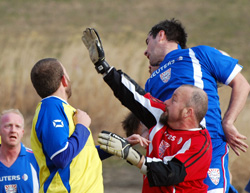
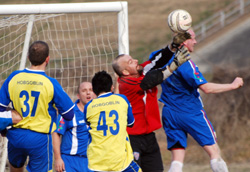

|
Misato, Sunday 20th January,
Sid wants a match report for the Geckoes v Vagabonds game because he has some nice pictures to use with it, unfortunately this reporter played for the Clash straight after the game and followed that up with a rather large night out so apologies in advance if this report is either missing facts or inventing things that never happened…
Anyway, what is without doubt is that it all happened on a beautiful sunny afternoon in Misato. The Geckoes had perhaps their strongest squad of the season whilst the Vagabonds were clearly missing a couple of players and the difference between the two teams was apparent from kick off.
News had filtered through that the Hibs had dropped points in the morning and the Geckoes were keen to capitalize as they dominated the early proceedings scoring twice in the first ten minutes and they could have had more.
 Andy Gill opened the scoring with his sixth goal of the season. He stormed through the Vags defence and smashed an unstoppable shot into the corner, 1-0 to the Geckoes. Andy Gill opened the scoring with his sixth goal of the season. He stormed through the Vags defence and smashed an unstoppable shot into the corner, 1-0 to the Geckoes.
A couple of minutes later he nearly made it two but the Vagabonds somehow managed to clear. After about 10 minutes Simon Bromwell stormed forward and linked well with Kazu and Andy Gill before feeding Paul to score for the fourth game in a row.
The Vags tried to bounce back but struggled to break through the Geckoes defence and although their lone striker Kev Gray battled hard he had very little support in the first half.
The Geckoes continued to look good going forward and scored a third as Paul scored his fifth goal in four games and the half time score was 3-0.
Any hopes of a Vagabonds fight-back were shattered shortly into the second half as Kazu made it 4-0 with a well taken goal.
The Vags finally got on the scoresheet with a direct freekick from 20 yards which appeared to go around the wall, but in fact went over the wall because according to Spencer if he ‘hadn’t ducked it would have hit him… ‘
The Geckoes sealed the win after more good work from Andy Gill who beat the Vags defence and shot into the left hand side of the goal only for Kazu to claim to have touched it before it crossed the line.
The final score was 5-1 to the Geckoes leaving them just two points behind the league leaders.
Report by Rob Manager
|